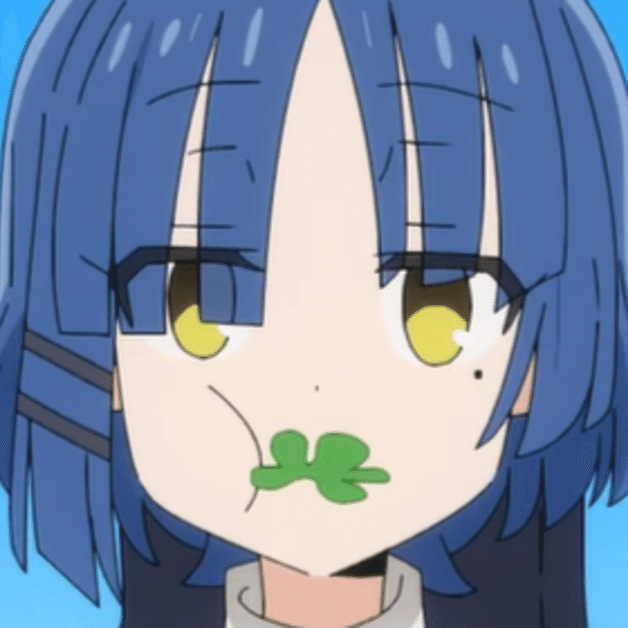
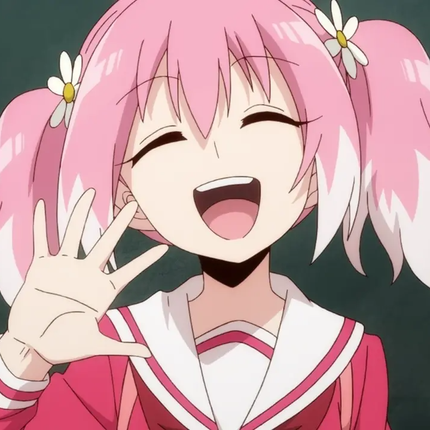

診断結果
あなたは「サブカル系中二病」です。
特徴
- 他人とは違う独特の趣味や嗜好を持つことで、自分を特別だと思い込む。
- 「自分は普通の人間とは違う」「流行りものには興味がない」という言葉が口癖。
- 特に音楽、映画、アニメなどのサブカルチャーでマニアックな知識をひけらかす傾向がある。
日常生活でのアドバイス
- 独特の趣味や嗜好を持つことは素晴らしいことですが、他人の趣味や価値観も尊重しましょう。
- 新しいジャンルや流行を否定せず、一度受け入れてみると世界が広がるかもしれません。
- 流行に背き個性を追求するのも、流行を気にするのも、どちらも普通の人間の心理で、誰しもが抱く欲求でしょう。自分の考えが一般的であり普通であると認識しているのも傲慢ですが、他人との差異のみを重視すると、思考や行動が偏り窮屈になってしまうかもしれません。
- マニアックな知識を披露する際は相手の反応を気にして、相手が興味を持つ話題かどうかを考えましょう。
サブカル系中二病のキャラクター
- ぼっち・ざ・ろっく！第一話
- 上京生活録イチジョウ第一話
- カイジ第一話
- 魔法少女サイト第一話
- 迷宮ブラックカンパニー第一話
山田リョウ（ぼっち・ざ・ろっく！）
 ユニセックスな見た目に無表情でミステリアスな少女。「結束バンド」のベースギター。喜多郁代を筆頭に女子生徒に人気があるが、内面や言動は変人そのもの。本人もそのように指摘されると喜ぶなど自覚があるようだ。中学時代に超マイナーな曲を文化祭で演奏したときは会場がお通夜状態になったらしく、今でもその夢をたまに見たりするなど繊細なところもある。江ノ島でタワーに登った時、急にバベルの塔の話を始めた。一条聖也（カイジ）
 帝愛グループが秘密裏に運営する裏カジノの店長。「沼(一度でも当たればそれまでに累積された賭け金を総取りできる一発パチンコ台)」を開発した。一玉4000円、最低300万円から勝負できる沼に、人生をかけて挑戦するカイジなどの債務者を見下している。高校卒業後に後輩・村上と共に上京し、意識高い系の若者としてこじらせていた経緯がある。
帝愛グループが秘密裏に運営する裏カジノの店長。「沼(一度でも当たればそれまでに累積された賭け金を総取りできる一発パチンコ台)」を開発した。一玉4000円、最低300万円から勝負できる沼に、人生をかけて挑戦するカイジなどの債務者を見下している。高校卒業後に後輩・村上と共に上京し、意識高い系の若者としてこじらせていた経緯がある。
朝霧要（魔法少女サイト）
東大合格確実の秀才として父や周囲から期待されている。が、その本性は醜く歪んでおり、東大に落ちた父に勉強を強制されるストレスからか、主人公である妹に日常的に暴力を振るっている。自分自身にしか価値を認めておらず、心のなかで他人を「クズ」「動く脳なし肉だるま」と見下している。柊ナナ（無能なナナ）
 能力は「人の心を読むこと」。笑顔の絶えない明るい性格だが、空気の読めない言動が多い。一見すると明るく積極的な美少女に見えるが第一話にしてその印象はガラッと変わる。 無能なナナ第一話 しかし、彼女の境遇は上記三人よりさらに悲惨なものであり、サブカル系中二病と安易に呼ぶには重すぎるかもしれない。二ノ宮キンジ （迷宮ブラックカンパニー）
 スイングトレードや不動産収入によって成り上がった元セレブプロニートで、社畜を見下していた。「社畜 つらい」で検索し笑みを浮かべたり、雨を「良い天気だ」と言って、雨の中傘を指して歩く学生たちや通勤ラッシュで遅々として進まない車を見て見下したりしていた。しかし、急に落とされた異世界にて社畜として働くことになる。仲間とともにブラック企業の悲哀から抜け出すことを目標にしている。
スイングトレードや不動産収入によって成り上がった元セレブプロニートで、社畜を見下していた。「社畜 つらい」で検索し笑みを浮かべたり、雨を「良い天気だ」と言って、雨の中傘を指して歩く学生たちや通勤ラッシュで遅々として進まない車を見て見下したりしていた。しかし、急に落とされた異世界にて社畜として働くことになる。仲間とともにブラック企業の悲哀から抜け出すことを目標にしている。